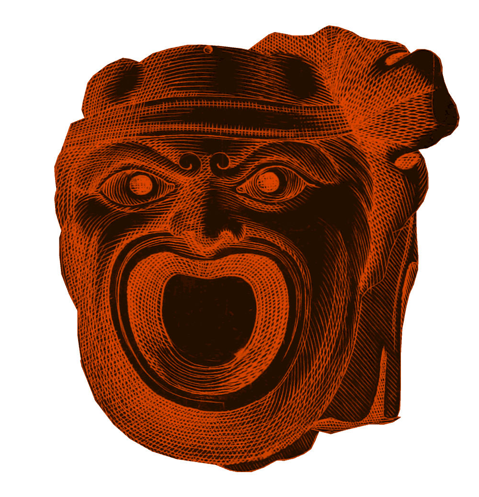

Czakó Zsigmond: Leona
Madách Imre: Az ember tragédiája
Vörösmarty Mihály: Csongor és Tünde
A klasszikus magyar drámairodalomból válogattunk kanonikus és a kánonból méltatlanul kiszorult darabokat.
Az itt elérhető, legfrissebb szövegváltozatokon alapuló kiadások célja a művek népszerűsítése és a digitális könyvtervezés lehetőségeinek bemutatása.
Az elektronikus könyveket Zámbó Gergő készítette az ELTE BTK XVIII-XIX. századi Magyar Irodalomtörténeti Tanszékének.